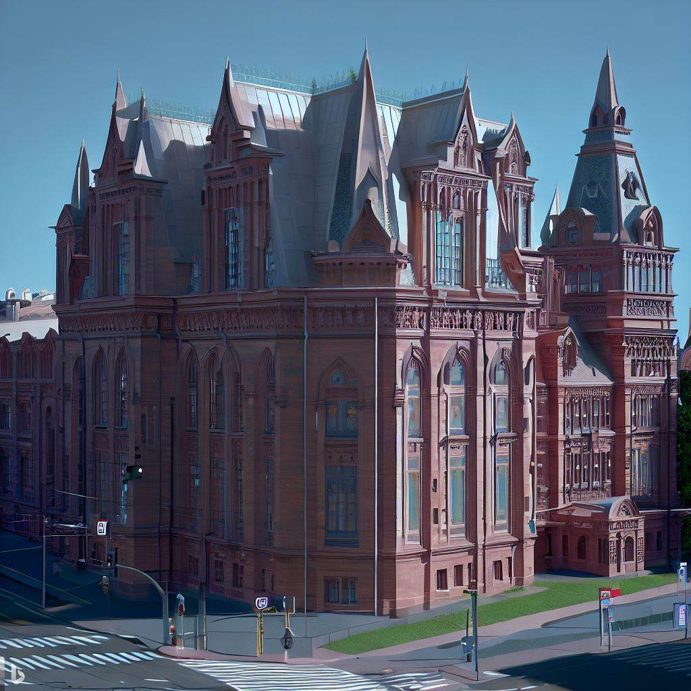
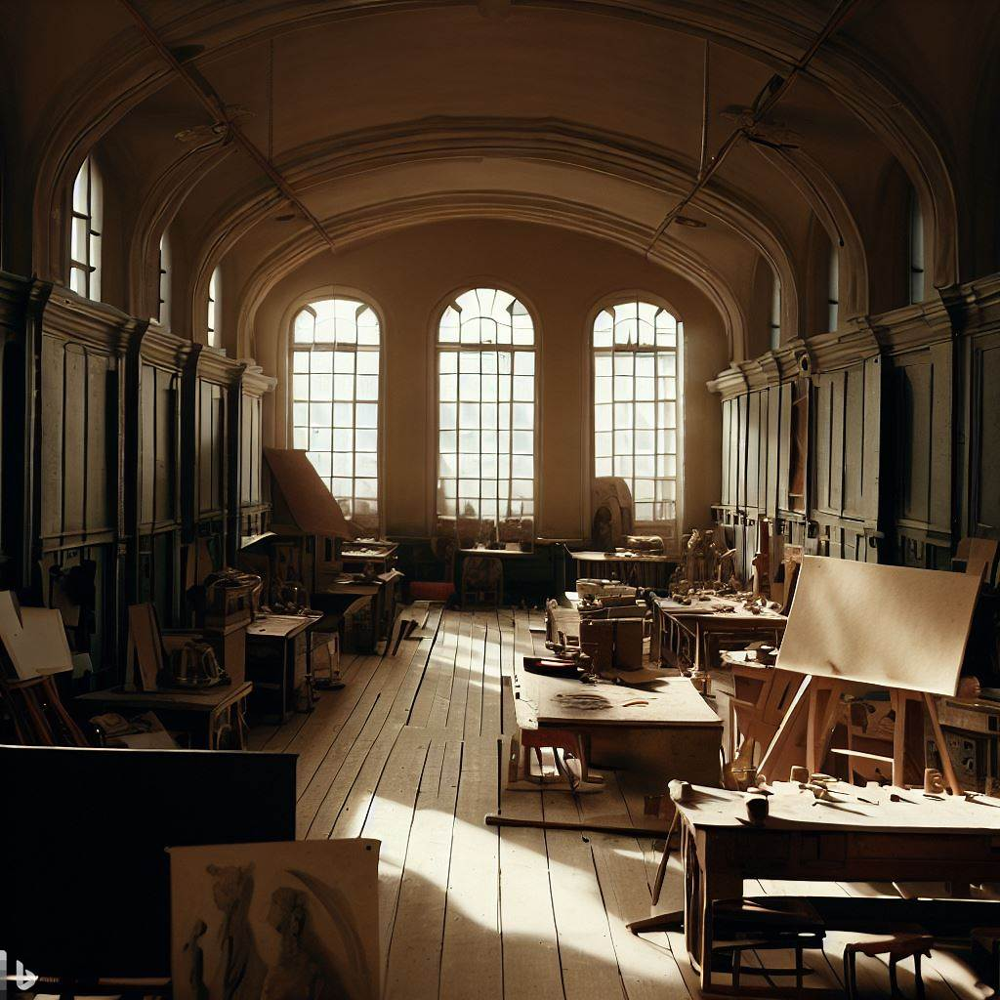
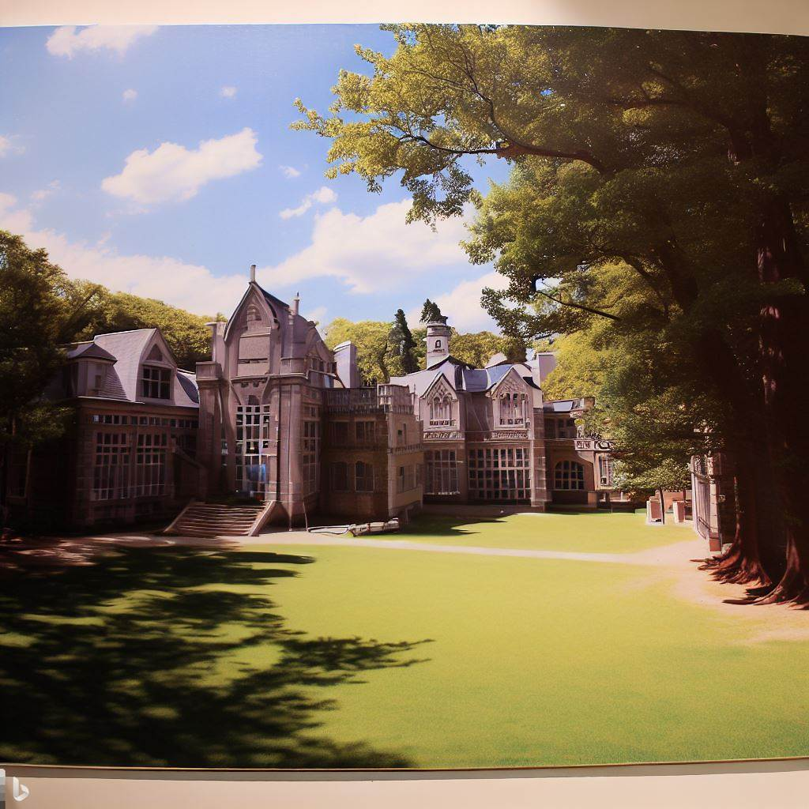
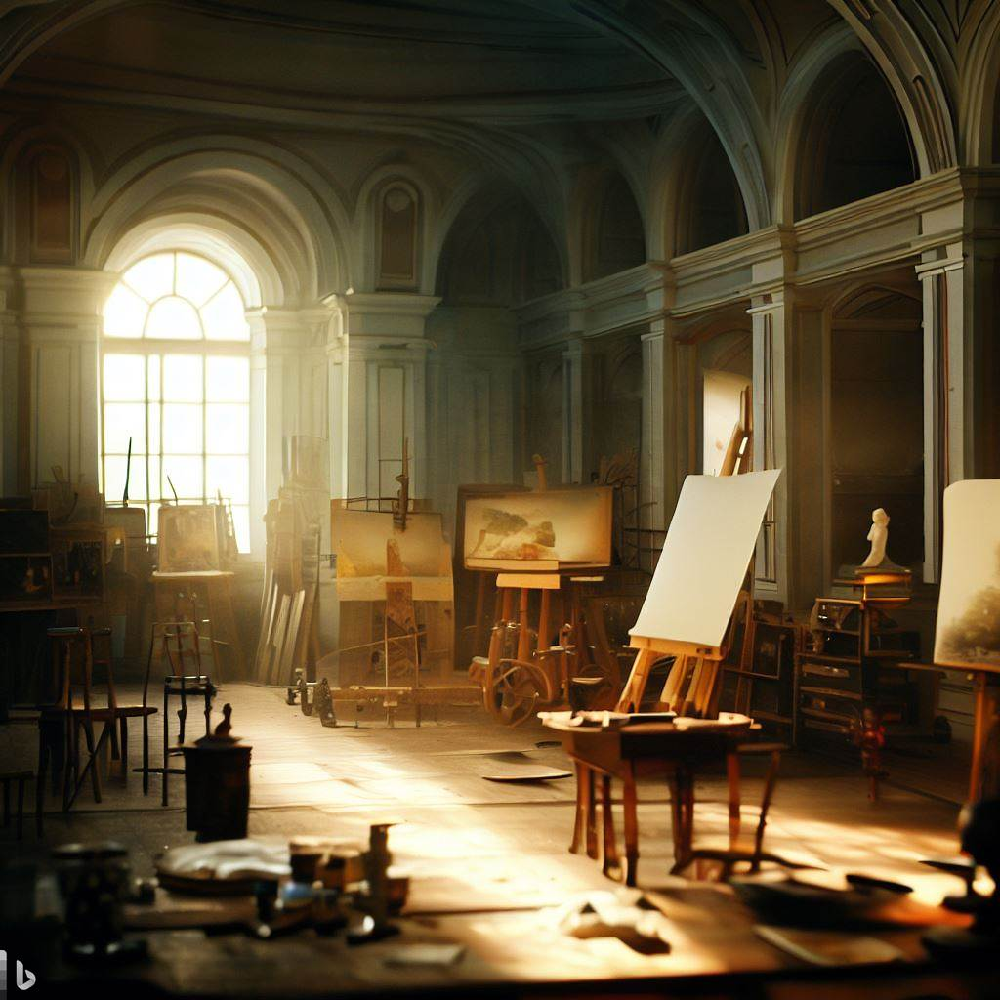
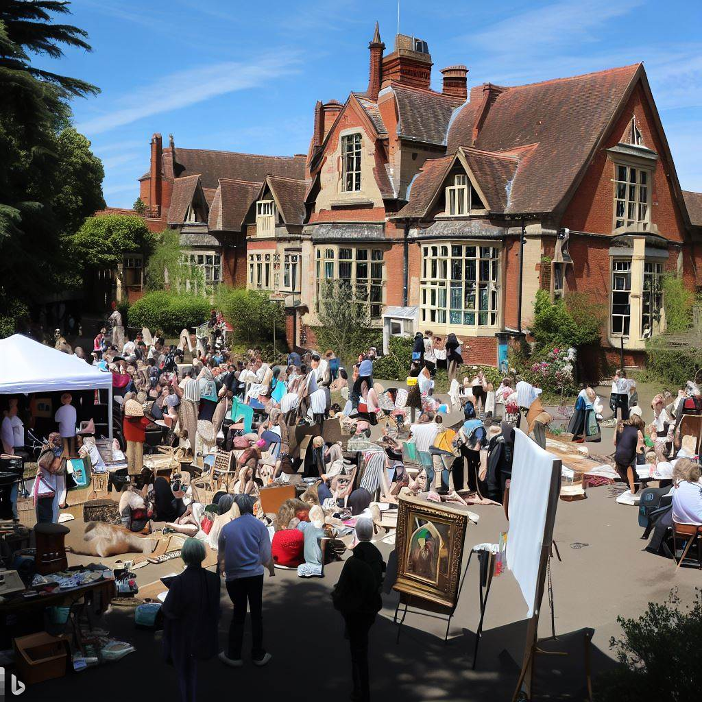
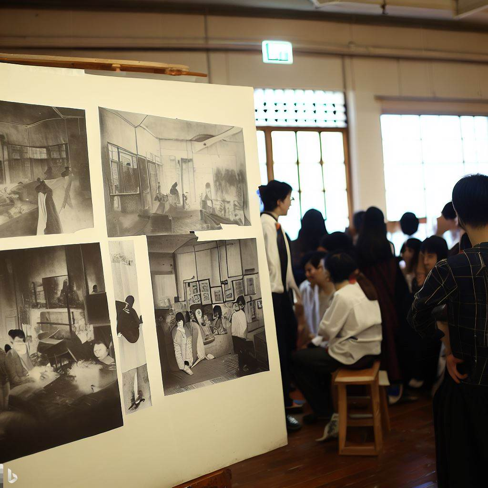
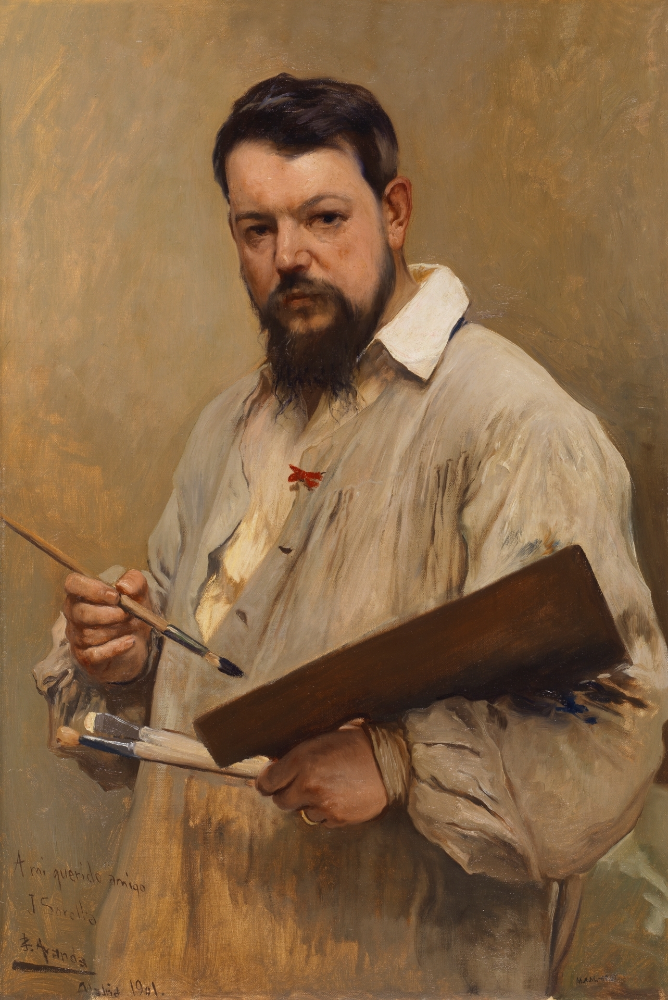
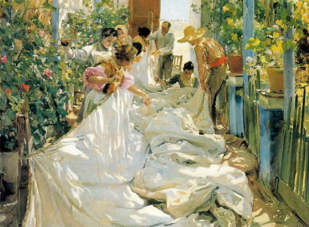
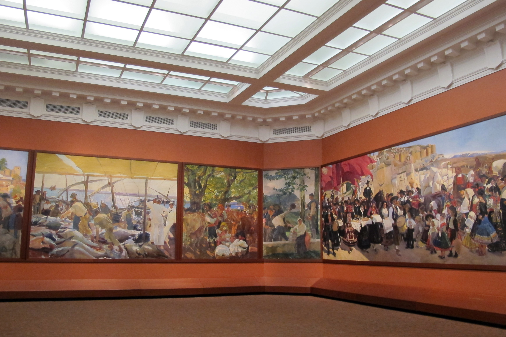

Escuela de Arte Joaquín Sorolla
La Escuela de Arte Joaquín Sorolla es un emblema de excelencia y creatividad en el mundo del arte. Fundada en 1975, nuestra escuela ha sido un refugio para los artistas y un semillero de talento emergente. Nuestro compromiso es con el arte, la innovación y la enseñanza de calidad. La escuela es un espacio donde los estudiantes pueden experimentar, aprender y crecer en un ambiente de respeto y apreciación por el arte.
Desde pintura y escultura hasta diseño gráfico y fotografía, ofrecemos una amplia variedad de disciplinas y técnicas. Nuestros profesores, todos ellos artistas activos y profesionales del campo, están comprometidos a guiar a nuestros estudiantes en su camino hacia la expresión artística.
Estamos orgullosos de nuestro legado y emocionados por lo que el futuro tiene reservado. Te invitamos a unirte a nosotros y experimentar de primera mano la pasión, el compromiso y la belleza del mundo del arte.
Instalaciones del Centro
Nuestro centro se extiende por un impresionante campus con espacios dedicados a cada disciplina artística. Cada espacio está diseñado para fomentar la creatividad y proporcionar un entorno de aprendizaje efectivo.
Disponemos de aulas luminosas y espaciosas, ideales para la pintura y el dibujo. Los talleres de escultura están equipados con todas las herramientas y materiales necesarios para trabajar con una variedad de medios. Nuestros estudios de fotografía y diseño gráfico cuentan con la última tecnología y software.
Nuestra galería de arte en el campus alberga exposiciones regulares de trabajos de estudiantes y profesores, así como de artistas locales e internacionales. Es un lugar de inspiración y de celebración del arte en todas sus formas.
Comunidad del Centro
La Escuela de Arte Joaquín Sorolla no es solo un lugar para aprender, es una comunidad. Nos enorgullece la diversidad y la inclusividad de nuestros estudiantes y profesores. Creemos que cada individuo aporta algo único a nuestra comunidad, enriqueciéndonos a todos.
Organizamos regularmente eventos y talleres para nuestros estudiantes, profesores y personal. Estas actividades no solo son divertidas, sino que también fomentan la colaboración y la construcción de una red sólida dentro de nuestra comunidad.
Nos enorgullece el ambiente de apoyo y la camaradería que se siente en nuestra escuela. Estamos comprometidos a mantener este espíritu de comunidad y esperamos dar la bienvenida a nuevos miembros cada año.
Joaquín Sorolla
Joaquín Sorolla y Bastida, nacido en 1863 en Valencia, España, se destaca como uno de los más prominentes y talentosos pintores de su generación. Reconocido ampliamente por su habilidad excepcional para capturar la luz y el color en sus obras, Sorolla permanece en la memoria de la comunidad artística por su profundo amor por su tierra natal y su dedicación incansable al arte.
A lo largo de su vida, Sorolla demostró una versatilidad encomiable, experimentando con varios estilos y técnicas, sin embargo, fue su maestría en el impresionismo lo que realmente distinguió su arte. Sus retratos, paisajes marinos y escenas cotidianas, pintados con pinceladas sueltas y colores vibrantes, son famosos por su realismo luminoso, vitalidad y detalle meticuloso.
Más allá de su contribución al mundo del arte, Sorolla fue un defensor de la educación y la cultura, usando su arte para arrojar luz sobre los problemas sociales de su tiempo. Su serie "Visión de España", que retrata la diversidad cultural y regional de España, es un testimonio de su compromiso con la representación realista y la visibilidad cultural.
En honor a su legado, la Escuela de Arte Joaquín Sorolla lleva su nombre, con el objetivo de inspirar a generaciones de estudiantes a seguir sus propios caminos en el arte. Al igual que Sorolla, animamos a nuestros estudiantes a explorar, experimentar y encontrar su propia voz artística, a la vez que les inculcamos un aprecio por la tradición y la historia del arte.